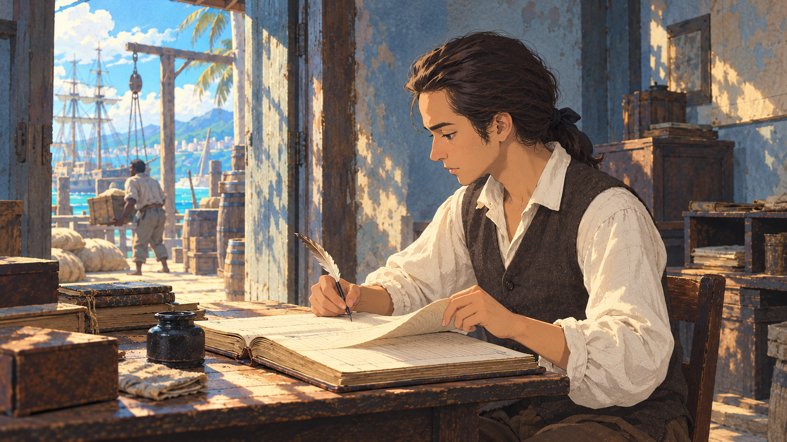
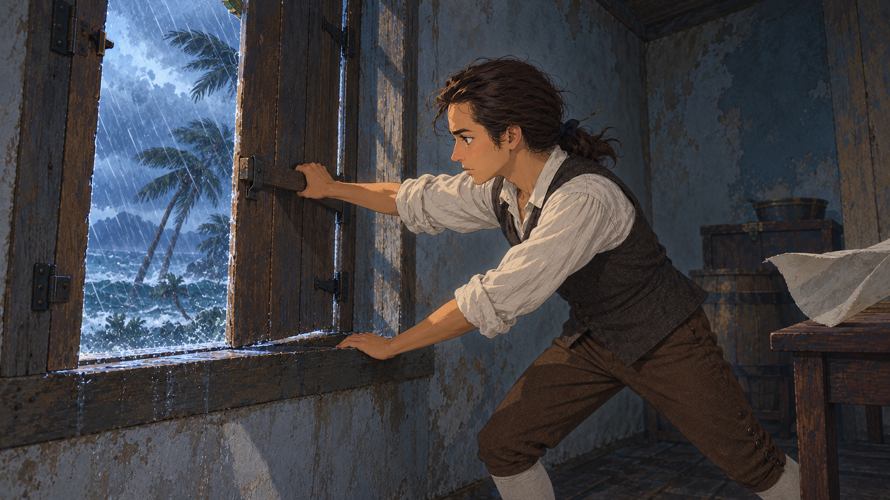
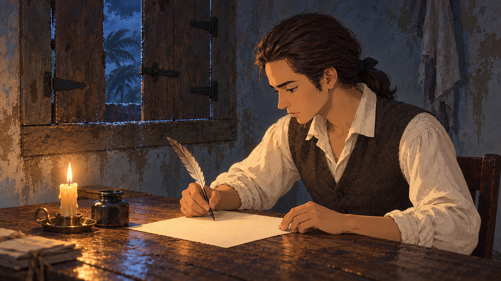
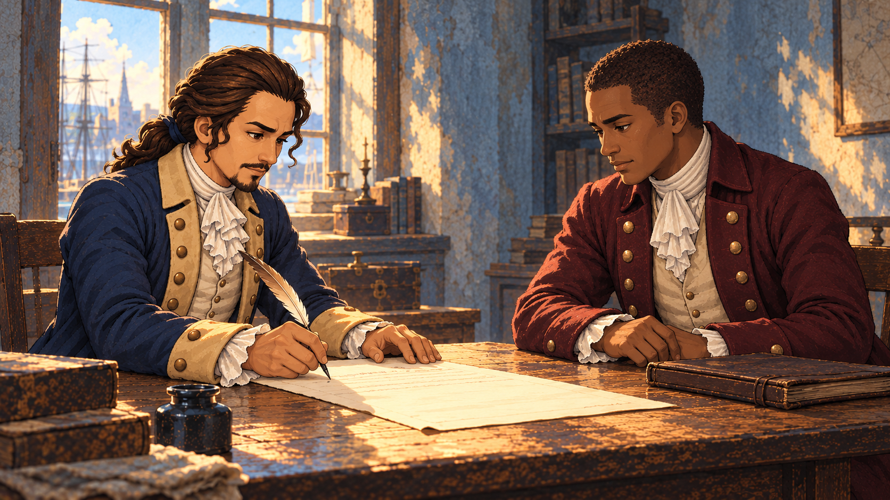
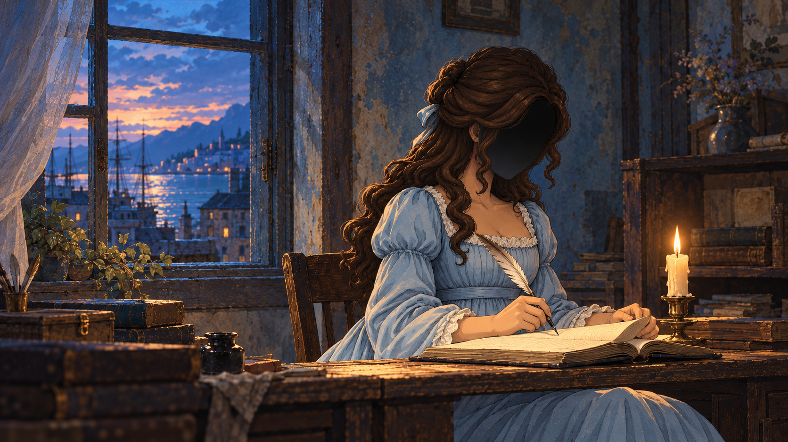

O02 / 开场 08–18 秒世界从门外经过The World Beyond the Door晴蓝、生活细节、少年造型首帧 笔停在账本附近，左手碰到页角；门外的人和货物正在经过。随后 翻页 → 核对门外货物 → 再次落笔，压住被风掀起的页角。查看生成提示词 ↗
O03 / 开场 18–28 秒风压进屋里Wind at the Shutters身体重量、风向、风暴空间首帧 窗板仍开着，少年伸手抓住横档，重心准备向后。随后 拉回窗板 → 插上木闩 → 退半步稳住，外界声音变闷。查看生成提示词 ↗
O04 / 开场 28–40 秒这次写自己的话His Own Words暗部层次、烛光、脸与双手首帧 风灾后的夜里，纸面尚空，少年准备落下第一笔。随后 落笔 → 写一小段 → 停顿 → 继续。查看生成提示词 ↗
E3-02 / 合作结局 08–16 秒 · 剧情提案共同署名Signing Together成年身份、双人构图、轮流行动首帧 Hamilton 执笔，伯尔等待，两人注意力在同一份文件上。随后 完成一笔 → 放笔 → 推纸 → 伯尔伸手接笔。查看生成提示词 ↗
C01 / 结尾通用镜头 24–30 秒记录仍在继续The Record Continues浅蓝裙、完全隐于阴影的脸、记录姿态首帧 Eliza 低头，执笔与打开的记录册，手触页角。随后 停顿 → 落笔或按住来信 → 风轻触页角；不抬头露出五官。查看生成提示词 ↗